>
>
All ▾

 >
>
All ▾

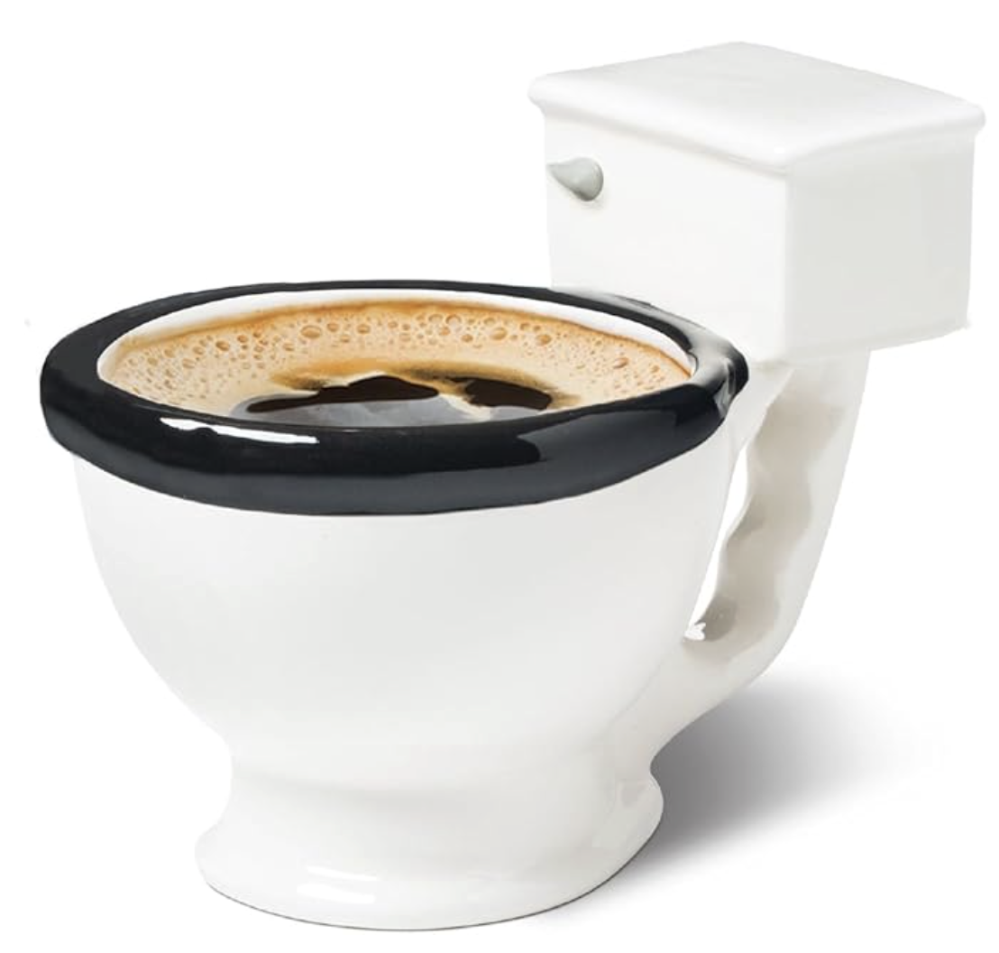
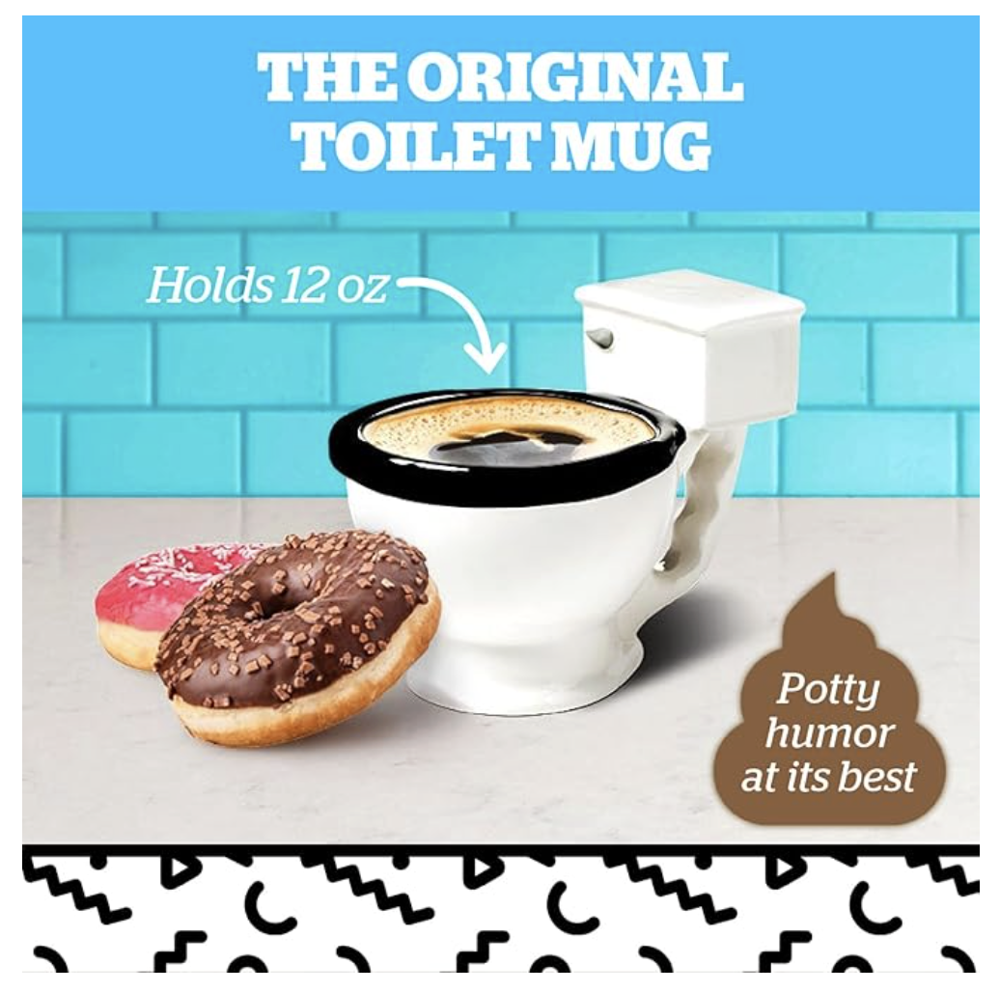
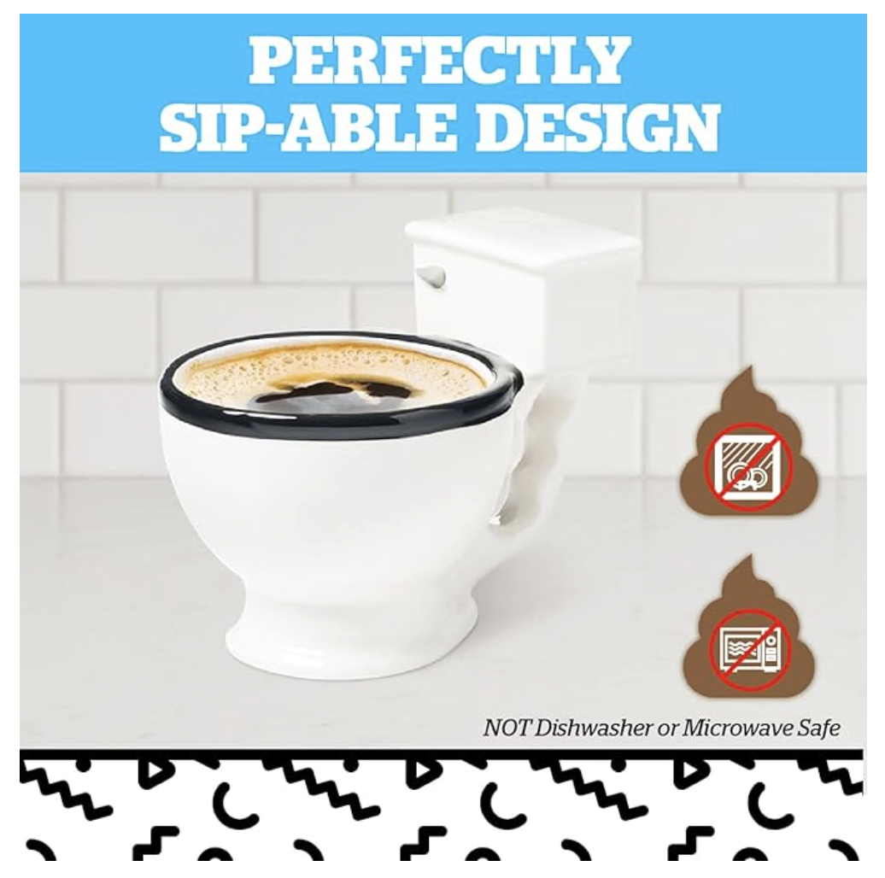
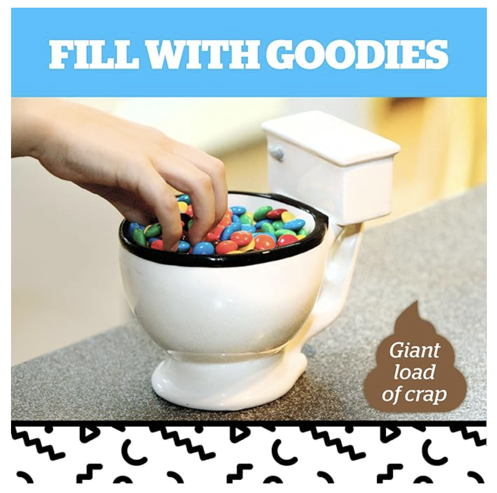
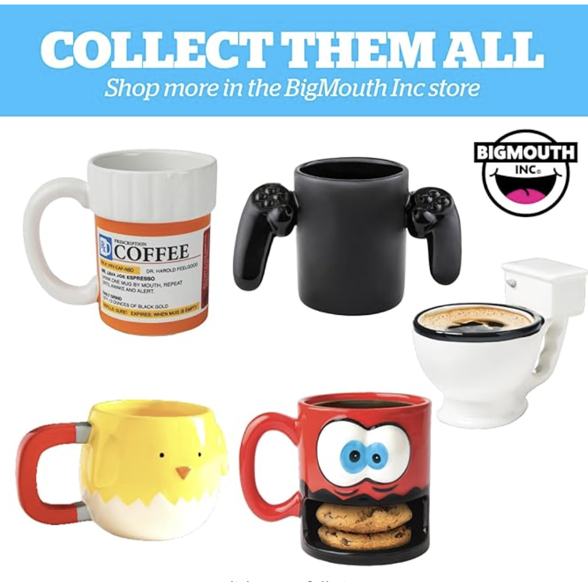
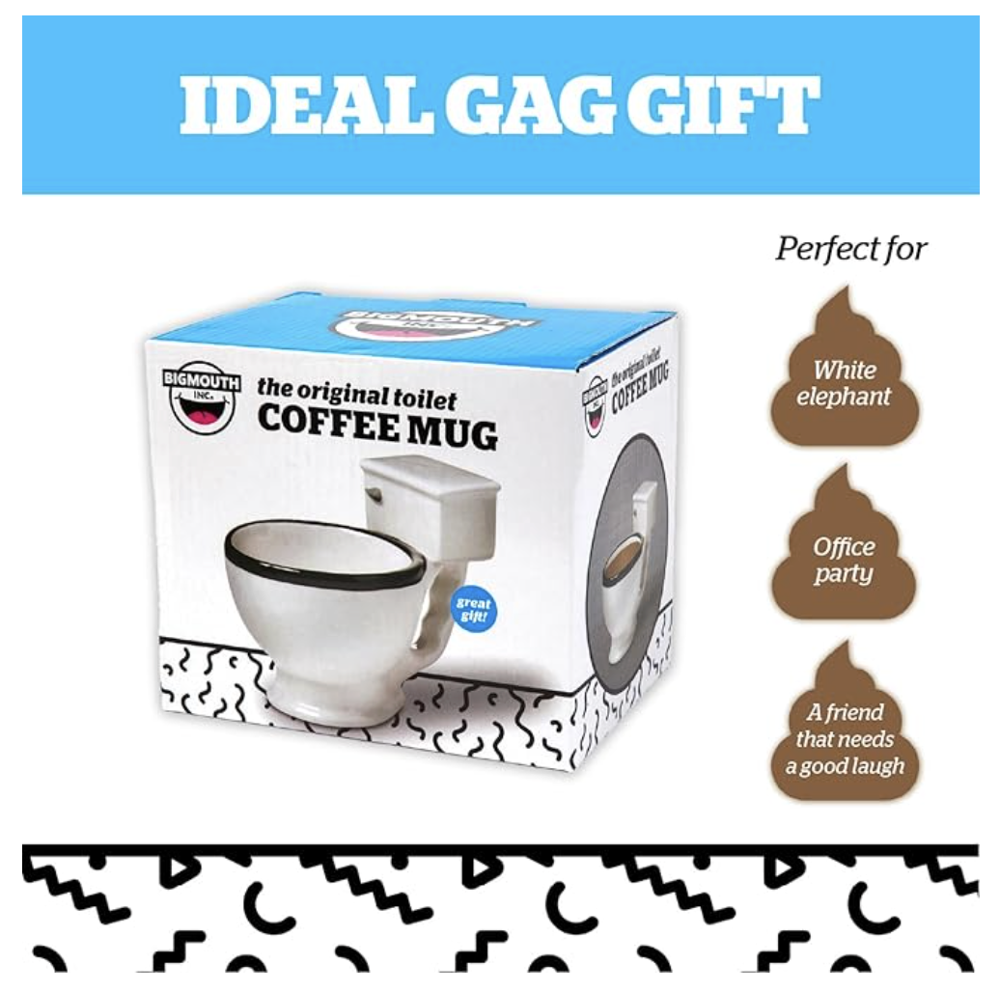
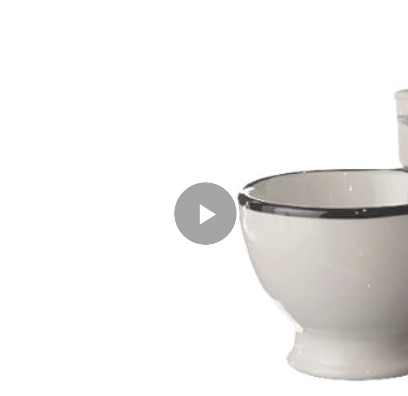
The Original Toilet Mug - Drink Your Coffee From a Tiny Toilet, Confuse Everyone Around You 🚽
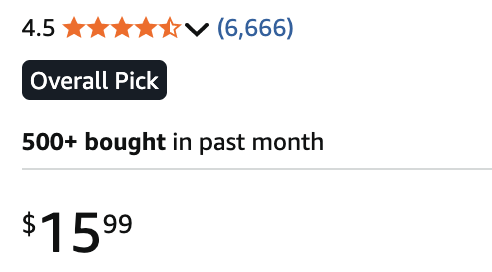
🚽 Start Your Day The Toilet Way: Why drink coffee from a normal mug when you can drink it from a tiny toilet? Perfect for anyone who believes mornings should start with caffeine and questionable life choices.
😸 The Ultimate Gag Gift: Birthdays, Christmas, office parties—this mug will instantly become the most talked-about gift. After all, it celebrates both number one and number two.
☕ Holds Your Coffee… And Your Dignity: This 12 oz toilet mug is perfect for coffee, tea, hot chocolate, or even cereal and snacks. Basically anything you'd normally put in a bowl… but now it's a toilet.
🎁 Guaranteed To Make People Laugh: Give it to friends, coworkers, or that one person who loves weird gifts. One look at this mug and their morning will go from sleepy to “why am I drinking from a toilet?”
Customer reviews
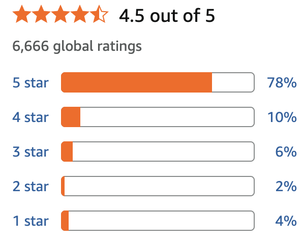
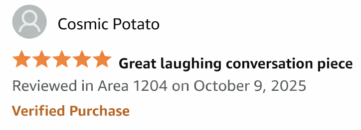
I bought these thinking they would just be a funny decoration. But one guest thought the sheep were actually part of a system and carefully put every new roll onto the sheep like they were following some kind of bathroom rule. Now everyone who visits does the same thing. Apparently the sheep are now officially in charge of toilet paper management.
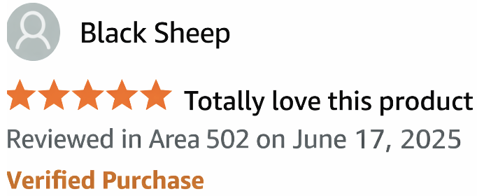
I originally bought this toilet mug as a joke, planning to drink coffee from it and confuse my coworkers. But then I realized it makes a surprisingly great flower pot. So now there's a tiny bouquet of flowers growing out of a miniature toilet on my desk. Visitors always stop, stare at it for a second, and then start laughing. Honestly, it's the only toilet that has ever made my office look more beautiful. 🚽🌸😄
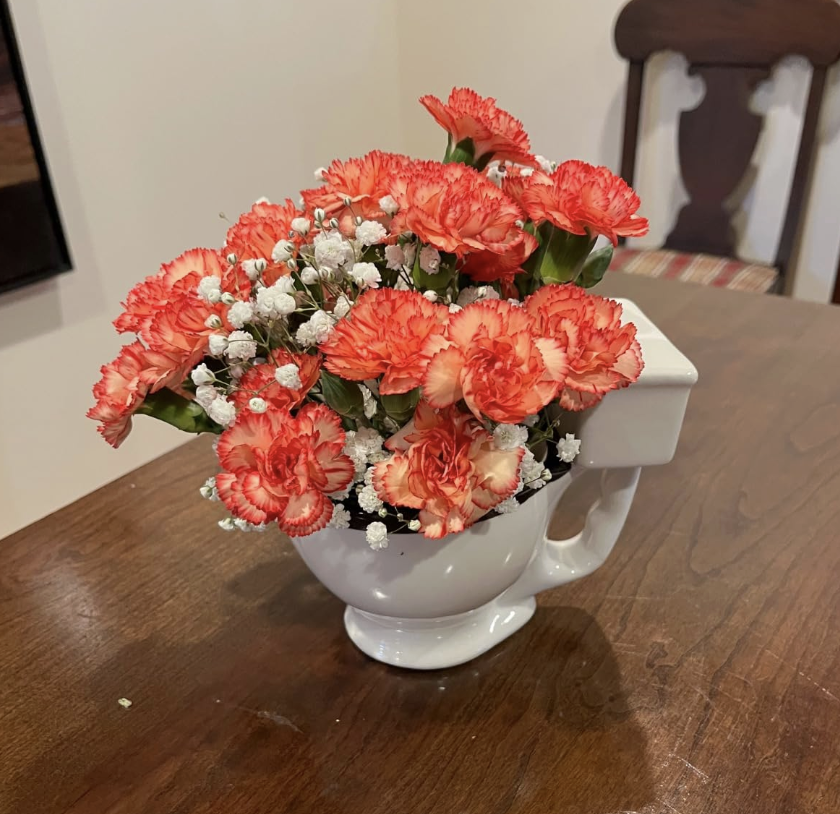
I bought this mug thinking it would just be a funny little coffee cup. Turns out the “large” part is no joke. On the first morning I filled it with coffee and proudly carried it to my desk. Ten minutes later my coworker walked by, stared at it for a solid five seconds, and asked very seriously, “Why are you drinking coffee out of a toilet?” Now every time I use it, someone new in the office discovers it and has the exact same reaction. Yesterday my boss walked in, saw it, and just slowly backed out of the room. Great mug. Holds a lot of coffee and ruins people's mornings in the best possible way.